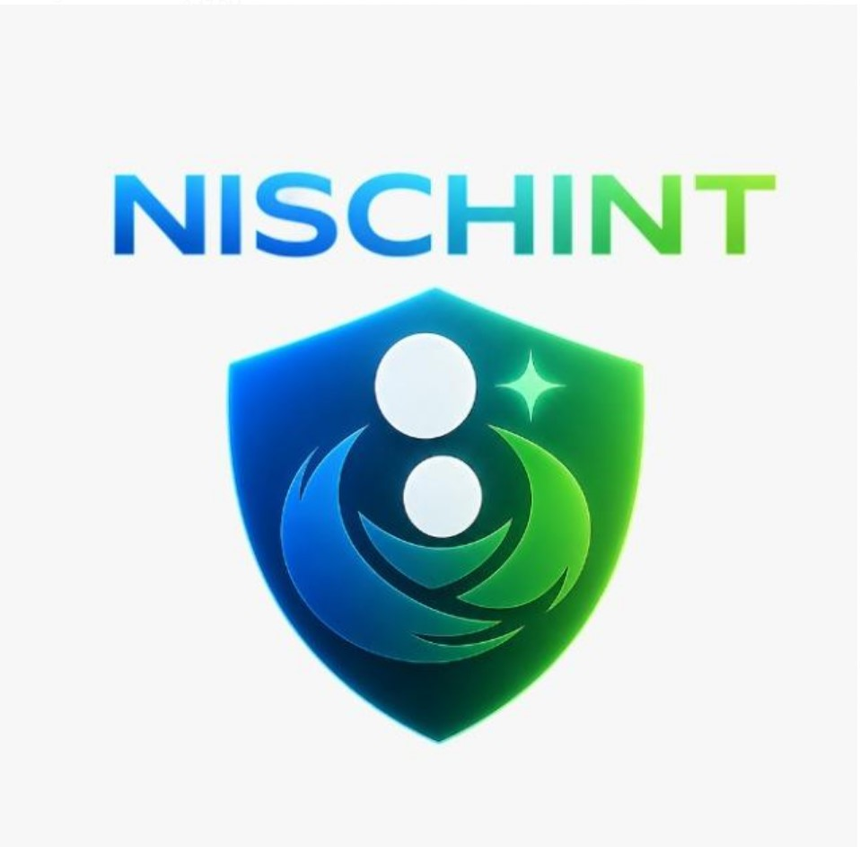
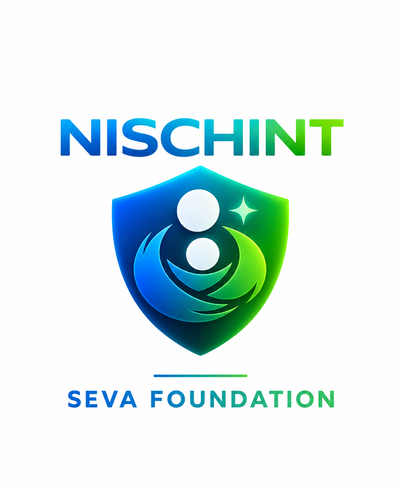

01 / SAFETY TECHNOLOGY

PROTECTING WHAT MATTERS
INDEPENDENT CREATIVE PORTFOLIO / 001
I'm Arya Patole — Digital Designer & Web Creator. I turn ambitious ideas into memorable digital experiences.

I believe a powerful digital experience should do more than look beautiful. It should communicate, move people, and leave an impression.
IMPACTORY is where visual thinking, web craftsmanship and experimentation meet.
Six creative worlds — from safety and social impact to civic technology, storytelling and digital experiences.


Arya Patole is a Digital Designer & Web Creator. IMPACTORY is his creative portfolio and digital identity.
IMPACTORY is a portfolio for digital design, web experiences and visual storytelling, guided by the idea “Ideas made to make an impact.”
The portfolio focuses on web design, digital visual experiences, interaction, motion and brand-led storytelling.
Use the contact section below. Direct contact links can be added when verified contact details are provided.
Let's turn a bold thought into an unforgettable digital experience.
START A CONVERSATION ↗Contact email is a placeholder — replace before publishing.